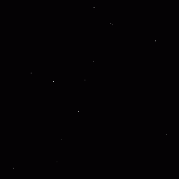

07. 使用父子关系实现复杂移动！¶
父子关系¶
在Effekseer中，节点有父子关系。父子关系让父节点以某些方式影响子节点。
例如，假设你有节点A和节点B。 节点A是节点B的父节点。在这个例子中，节点B产生的粒子会围绕节点A的粒子生成、移动、旋转和缩放。这很难用语言来理解，所以下面播放了一段视频。
节点A的粒子为红色，节点B的粒子为绿色。你可以看到，粒子B围绕着粒子A旋转，而粒子A自身在移动和旋转。
父子关系
父子关系可以用来创造复杂的特效。例如，你可以让子粒子从父粒子中发射出来。在下面的例子中，父节点是正在移动的拉长的粒子，而子节点是从父粒子的尖端发出的大量雪粒子。

示例
你可以通过下面的链接下载为本章内容预制的特效素材。
龙卷风特效¶
使用父子关系制作一个龙卷风特效。
打开文件effect1.efkefc。
这个特效由控制旋转的父粒子和绘制图像的子粒子组成。按顺序创建父节点和子节点。
子节点¶
添加一个子节点。左键单击选中父节点。然后右键单击以显示菜单。从菜单中，选择添加节点。

添加节点
左键单击选择刚添加的节点。为子节点输入参数，使粒子向上移动。
| 窗口 | 参数 | 值 |
|---|---|---|
| 位置 | 位置方法 | 位置・速度・加速度 |
| 位置 | 位置（平均） | x=2, y=0, z= 0 |
| 位置 | 速度（平均） | x=0, y=0.5, z= 0 |
你可以看到，子粒子跟随父粒子的旋转而移动。
旋转
此外，可以输入以下参数来改善外观。
| 窗口 | 参数 | 值 |
|---|---|---|
| 基础设置 | 名称 | Child |
| 基础设置 | 生成数量 | 正无穷 |
| 位置 | 位置（平均） | x=0, y=0, z= 0 |
| 位置 | 位置（振幅） | x=3, y=3, z= 3 |
| 基础渲染设置 | 纹理 | Partcle1.png |
| 基础渲染设置 | 混合方法 | 加法 |
| 渲染设置 | 整体颜色 | 随机 |
| 渲染设置 | 整体颜色（最小） | 255,177,177,255 |
| 渲染设置 | 整体颜色（最大） | 255,255,255,255 |
特效更好看了。

完成的特效
流星特效¶
使用父子关系制作一个流星特效。
打开effect2.efkefc。
在Effekseer中，父子关系可以在子粒子生成的瞬间切断。这意味着虽然子粒子是围绕着父粒子创建的，但父粒子之后的移动或旋转不会影响到子粒子。
你可以用这个功能制作流星特效。
父节点¶
父节点只需要移动。参数已经提前设置好了。

总结¶
在本章中，你使用父子关系创建了复杂的效果。在下一章中，你将更改生成方法，把粒子放在圆形或直线上。